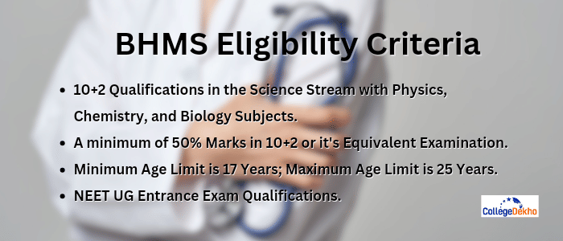

- We’re on your favourite socials!


BHMS Course
 Save
Save Request a callback
Request a callback Ask us
Ask us
BHMS course (Bachelor of Homoeopathic Medicine and Surgery) is a five-and-a-half-year undergraduate course that provides in-depth instruction in the theories and practices of homoeopathic medicine. This course covers human anatomy, physiology, pathology, and homoeopathic pharmacy, integrating academic studies with hands-on clinical experience. Homoeopathic medications diagnose, treat, and manage a wide range of ailments to facilitate the body's inherent healing process. Graduates of the curriculum can find employment as consultants, researchers, or homoeopathic practitioners in the public and private healthcare sectors.
BHMS Course Overview
BHMS course (Bachelor of Homoeopathic Medicine and Surgery) is an extensive 5-year undergraduate program and a compulsory 6-month rotary internship. It is a course that combines the insights of ancient wisdom with homoeopathy that we now use to strengthen and heal from within our bodies. For BHMS course eligibility, a prospect needs to have qualified higher secondary evaluation with a minimum 50% marks in English, Physics, Chemistry, and Biology. Candidates will have to appear for entrance examinations including NEET, KEAM, IPU CET, or PU CET to be admitted. With a difference that ensures it is dynamic and diverse with its specialisation courses in Homoeopathic Pharmacy, Infertility, Skincare.
While there are many colleges and universities offering candidates to apply for a BHMS course in India, some of the best ones include Anuradha Homoeopathic Medical College, Smt. Chandaben Mohanbhai Patel, Calcutta Homoeopathic Medical College, Homoeopathic Medical College, Parul University and Dr. DY Patil Homoeopathic Medical College. Depending on the type of institution, the BHMS course fee varies from INR 80,000 to INR 2.5 LPA. After completion of the degree, professionals can opt for several BHMS Jobs such as Homoeopathic Doctor, Public Health Specialist, Pharmacist, etc.
The average BHMS Salary ranges between INR 2 LPA and 10 LPA. Today, homoeopathy is widely regarded as the third largest in the field of medical service in India, providing medical assistance to a large number of people in need.
Table of Contents
- BHMS Course Overview
- BHMS Course Highlights
- BHMS Course: Reasons to Choose
- BHMS Course vs. BAMS Course
- BHMS Course Types
- BHMS Eligibility Criteria
- BHMS Course Entrance Exams
- BHMS Course Admission Process
- BHMS Course Fee
- BHMS Course Syllabus
- BHMS Course Colleges in India
- BHMS Course: Top Colleges (State and City Wise)
- BHMS Course in India: Top Private Colleges
- BHMS Course in India: Top Government Colleges
- BHMS Course Abroad
- BHMS Course Scope
- BHMS Course: Career Options and Job Opportunities
- BHMS Course After Graduation (Post-Graduation and MD)
- FAQs about B.H.M.S.
BHMS Course Highlights
Mentioned below are the highlights of the BHMS course.
| Name of the course | BHMS |
|---|---|
| BHMS course Full Form | Bachelor of Homoeopathic Medicine and Surgery |
| BHMS Course Level | Undergraduate course |
| Field of study | Ayurvedic Medical Science (Healthcare Industry) |
| Type of program | Degree course |
| BHMS Course duration | 5.5 years |
| Minimum Qualifications | 50% in the 10+2 exam with Physics, Chemistry, Math, and Biology |
| BHMS course fees (average) | INR 80,000 to INR 2.5 LPA |
| BHMS Salary (average) | INR 2 LPA to INR 10 LPA |
| Career opportunities | Homoeopathic Doctor, Public Health Specialist, Pharmacist, Teacher, Lecturer |
BHMS Course: Reasons to Choose
BHMS full form is Bachelor of Homoeopathic Medicine and Surgery. Whether a student wants to pursue a BHMS course over other medical courses is completely up to their interests. Over the years, the popularity of BHMS courses has increased, which has also made it possible to have more opportunities in this field. Here are some of the key reasons to choose a BHMS course in India:
- Homoeopathy as a part of medical practice: The BHMS course mainly focuses on teaching the fundamental techniques of how to cure diseases by administering very diluted remedies that give a boost to the body’s natural healing factor and cure the disease from within. The patients are observed closely by homoeopathy doctors in terms of how the patients react medicinally to their lifestyle, surroundings, and genetics to come to a proper and calculated conclusion.
- Homoeopathy as a holistic approach: Homoeopathic usage also complements naturopathy and other holistic healing techniques. A homoeopathic practitioner gets a lot of opportunities to enjoy learning different ways of how a patient reacts to their surroundings, genetics, and lifestyles, and how these impact their overall health.
- Homoeopathy differs from regular treatment: Some homoeopathic practitioners are also working as consultants, and they seek to give over-the-counter remedies to illness and also provide proper counselling to patients, but they cannot claim to be providing any medical advice or healing. Such homoeopathic practitioners believe that the body is capable of healing itself naturally from any disease if we do it by triggering a specific medication.
- Huge Demand for Homoeopathic Doctors: Homoeopathy is practiced all around the globe today because of its significant lack of side effects, and thus, with the ever-increasing demand for such doctors, the scope of BHMS course graduates has become significantly higher than the rest.
- Lucrative Salary Packagers: Many factors can contribute to BHMS salary after graduation. Compared to Ayurvedic doctors and other medical professionals, homoeopathic doctors earn a lot better solely due to the diversity of the practice setting.
- Career Outlook: Many people are getting exposure to the homoeopathic medical system due to various portals and media, which is influencing a lot of people to go for natural and holistic medicinal practices. The rate of conversion to holistic medicine is at an all-time high right now, and the demand has grasped international attention in countries like the USA, the UK, and many other European countries.
BHMS Course vs. BAMS Course
There are many differences between the BHMS course and the BAMS course, which we will discuss in terms of various points of difference as follows:
| Particulars | BHMS | BAMS |
|---|---|---|
| Full Form | BHMS Course or Bachelor of Homoeopathy Medicine and Surgery is an undergraduate degree course in the field of homoeopathy medicine. The course is specifically designed to impart knowledge of human anatomy along with various other subjects to students. | Bachelor of Ayurvedic Medicine and Surgery, abbreviated as BAMS is a degree in the medical field. This is a professional degree in the field of medicine, and it is focused on Ayurveda education, which is offered across various colleges in the country. Ayurveda education is specifically designed for those students who are particularly aware of the Indian tradition and its system of treatments. |
| Course Details | BHMS imparts students with the knowledge of medicine and surgery. The degree is awarded to students who gain the name of a homoeopathic doctor when they complete the BHMS degree. They study homoeopathic medicine that has no side effects. Studying BHMS is the first step on the ladder in the field of homoeopathy. | BAMS is known as the Ayurvedic traditional healing art of India. This course teaches and propagates knowledge about the ‘Ashtanga Ayurveda’ and various scientific advances in the modern field of medicine, along with its practical application. Undergraduates can gain admission only with the permission of the Central Council of Indian Medicine (CCIM). |
| Course Duration | BHMS course is an undergraduate degree program with a focus on Homoeopathic medicine in India and the course duration is 5 and a half years which also includes one year of internship. | BAMS is also an undergraduate degree program which focuses on Ayurvedic medicine education in India. This course’s duration is five and a half years. On completing this course, students are awarded the title of “Ayurvedacharya”. The BAMS degree theory portion is completed in four and a half years, and candidates must complete one year of rotary internship for practical training. |
| Admission Process | In India, students need to appear for the National Eligibility cum Entrance Test, or NEET, to get admission in 52,720 Ayush and various other undergraduate medical seats undergraduate courses offered by Ayush and different colleges in India. Admission to AYUSH courses is only possible through NEET. | To gain admission in Ayurvedic courses or Homoeopathy courses in India, students need to complete their 10+2 with Physics, Chemistry, Biology, and English as their core subjects. Students who belong to reserved categories need a minimum of 40% score, while general category students must score at least 50% aggregate marks to gain entry in these courses. |
| Job Prospects | Homoeopathic Doctor, Public Health Specialist, Pharmacist, Teacher, Lecturer, etc. | Business Development Officer, Ayurvedic Doctor, Category Manager, Resident Medical Officer, Jr. Clinical Trial Coordinator, Medical Representative, etc. |
| Expected Salary | INR 2 LPA - INR 10 LPA | INR 3 LPA - INR 15 LPA |
However, there is a lot of difference in the counselling process for both BHMS and BAMS courses, where students need to register themselves for these courses within the due date. Admission to these colleges is awarded only through the application forms filled out, the merit list, and the process of counselling.
BHMS Course Types
BHMS is a branch of medical sciences, largely focusing on enhancing the natural healing system of the body. Thus, it demands highly trained professionals to deal with patients suffering from certain ailments. Students who choose to study Bachelor of Homoeopathic Medicine and Surgery can earn an undergraduate degree at the end of their course, with lucrative career opportunities after graduation. Here is a list of BHMS course types in India.
- Full-Time BHMS Course: Offered by institutions through class-based offline learning, candidates are required to sit for entrance exams to qualify for full-time BHMS course admission.
- Part-Time BHMS Course: Usually opted by students who are working professionals, candidates are allowed to attend a selective number of offline classes to complete their BHMS course.
- Online BHMS Course: Classes and other activities are usually held through video lectures, online student participation programs, and online examinations.
BHMS Course Specialisations
Candidates pursuing a degree in homoeopathy can opt from the various BHMS course specialisations after 12th as per the table mentioned below:
- Homoeopathic Pharmacy
- Homoeopathic Paediatrics
- Homoeopathic Psychiatry
- Homoeopathic Skin Specialist
- Homoeopathic Infertility Specialist
List of Diploma Courses After BHMS
Here are a few diploma courses after BHMS in India that the graduates might consider:
- Certificate course in Electro Homoeopathy
- Certificate course in Clinical Homoeopathy
- Certificate course in Homoeopathic Medical System
- Certificate course in Homoeopathy
- Diploma in Electro Homoeopathy
- Diploma in Homoeopathic Medicine and Surgery
BHMS Eligibility Criteria

To be eligible to pursue a degree in homoeopathy, all aspirants have to keep in mind the following BHMS course eligibility criteria in India required to get admission to their desired institutions:
- All aspirants must have completed their 10+2 or its equivalent exam with Physics, Chemistry, Biology, and English as their core subjects.
- To get admission to the BHMS course, candidates need to clear the NEET entrance exam, which is held once a year.
- To appear for the NEET exam, you must score at least 50% of your total points in 10+2 exams. With the core subjects including English, Physics, Chemistry, and Biology, candidates must have a 40% aggregate.
- Candidates should be at least 17 years of age on or before December 31 of the particular year they are applying for BHMS admission.
- There is an upper age limit for gaining admission to the BHMS course, which is 25 years with 5 years of relaxation for reserved categories, i.e., SC/ST/OBC.
- The qualifying NEET percentile for general candidates is the 50th percentile, while SC/ST/OBC candidates must score at least the 40th percentile.
BHMS Course Entrance Exams
Students can get admission into BHMS courses by appearing in the entrance examinations, upon qualifying which they will be able to pursue the course in their desired institutions. There are many common BHMS entrance exams 2025 that students can appear for to get admission into the BHMS course.
| Name | Full Form | Exam Dates | Description |
|---|---|---|---|
| NEET UG Exam | National Eligibility cum Entrance Test | TBA |
|
| KEAM Exam | Kerala Engineering, Agriculture and Medical | TBA |
|
| PU CET UG Exam | Punjab University Common Entrance Test | TBA |
|
| TS EAMCET Exam | Telangana State Engineering Agriculture and Medical Common Test | TBA |
|
BHMS Course Admission Process
Before choosing the BHMS degree, the candidates should be well aware of the admission process. Here are the steps to follow for undergraduate students to understand the BHMS course admission process in India.:
- National Common Entrance Exams such as NEET UG and other similar state-level entrance exams allow students to apply for admission to BHMS courses.
- All the candidates who pass the entrance exam are deemed eligible to continue the BHMS course. Also, the candidates who score higher ranks in the entrance exams will secure a higher position in the merit list. To acquire an idea of the required eligibility for the BHMS admission process 2024, candidates may go through cut-off marks for BHMS courses.
- The final list of the selected candidates is created from the merit list with the names of the candidates shortlisted in the final round of selection.
- In the counselling session, three preferred colleges are asked of all the selected candidates for admission.
- The candidates are granted admission to one of the colleges from their preferred list based on the ranks obtained by the candidates.
- Before the final admission, an interview round is conducted with each eligible candidate in some colleges.
- The students must be prepared to face questions from the syllabus to test their capabilities. Also, it helps the interviewer to understand whether the candidate is fit for the BHMS course.
BHMS Course: Direct Admissions
- Institutions: Few private colleges grant direct admission in BHMS without NEET.
- Eligibility: 10+2 or equivalent with 50% marks in aggregate in Science Stream.
- Age: Not less than 17 or more than 31 years.
- Interview Process: As per Institute Admission Rules, the candidate must qualify for personal interview rounds.
BHMS Course Fee
The average BHMS course fees per year can range from INR 80,000 to INR 9,00,00, depending on the institution. While the BHMS course fees vary from college to college, BHMS course fees in private colleges are significantly higher than the BHMS fees in government colleges. All students are always advised to check their respective college fees before trying to gain admission to any BHMS college. The BHMS course fee for different institutes in India is listed below:
| College/University | Average BHMS Course Fees |
|---|---|
| Dr. DY Patil Homoeopathic Medical College and Research Centre | INR 1.9 LPA |
| Parul Institute of Homoeopathy and Research | INR 1.2 LPA |
| Yenepoya Dental College and Hospital | INR 3 LPA |
| Pratap Chandra Memorial Homoeopathic Hospital & College | INR 2.25 LPA |
| Nehru Homoeopathic Medical College and Hospital | INR 16000 PA |
| Smt. Chandaben Mohanbhai Patel Homoeopathic Medical College | INR 1.65 LPA |
| JIMS Homoeopathic Medical College and Hospital | INR 40,000 P |
| Aryakul College of Pharmacy and Research | INR 86,700 PA |
BHMS Course Syllabus
BHMS Course Syllabus
The BHMS Course syllabus in India provides extensive knowledge about the important topics and subjects in Homoeopathic Medicine and Surgery, required for professionals to practice in this field of medicine. While the course subjects are divided into theoretical and practical topics, the detailed year-wise syllabus of the BHMS course is listed below:
| BHMS Subjects 1st Year | |||
|---|---|---|---|
| Principles of Homoeopathic Philosophy and Psychology | Homoeopathic Materia Medica | Physiology including Biochemistry | Homoeopathic Pharmacy |
| Anatomy, Histology, and Embryology | - | - | - |
| BHMS Subjects 2nd Year | |||
| Pathology and Microbiology | Forensic medicine and toxicology | Organon of Medicine and Principles of Homoeopathic Philosophy | Surgery including ENT, Eye Dental, and Homeo Therapeutics |
| Homoeopathic materia medica | Obstetrics and Gynecology Infant Care and Homeo Therapeutics | The Practice of Medicine and Homeo Therapeutics | |
| BHMS Subjects 3rd Year | |||
| The Practice of Medicine and Homeo Therapeutics | Organon of Medicine | Obstetrics and Gynecology Infant Care and Homeo Therapeutics | Homoeopathic materia medica |
| Surgery including ENT, Ophthalmology, Dental, and Homeotherapeutics | - | - | - |
| BHMS Subjects 4th Year | |||
| Organon of Medicine | The Practice of Medicine and Homeo Therapeutics | Repertory | Homoeopathic materia medica |
| Community Medicine | - | - | - |
BHMS Course Colleges in India
As we are aware of the fact, homoeopathy is deeply rooted in Indian soil. Therefore, several colleges in India offer candidates to pursue a BHMS course after completing their 10+2. Most colleges accept BHMS admissions through NEET UG. Therefore, students may look through the list of BHMS colleges accepting NEET 2024 scores. Mentioned below are some of the top BHMS course colleges in India:
| College/University | Location |
|---|---|
| Lokmanya Homeopathic Medical College | Pune |
| Sanskriti University | Mathura |
| GD Memorial Homeopathic Medical College and Hospital | Patna |
| The Calcutta Homeopathic Medical College and Hospital | Kolkata |
| Pandit Deendayal Upadhyay Memorial Health Science and Ayush | Raipur |
| Naiminath Homeopathic Medical College, Hospital and Research Center | Agra |
| Smt. Chandaben Mohanbhai Patel Homeopathic Medical College | Pune |
| Kerala University of Health Sciences | Thrissur |
| Government Homeopathic Medical College and Hospital | Pune |
BHMS Course: Top Colleges (State and City Wise)
Some of the top institutions in India, offering admission to students in undergraduate BHMS degree programs are mentioned below in a state and city-wise categorization:
Maharashtra
| College/University | City |
|---|---|
| Bharti Vidyapeeth Deemed University | Pune |
| Dr. M.L. Dhawale Memorial Homeopathic Medical College | Mumbai |
| DKMM Homeopathic Medical College and Hospital | Aurangabad |
| Smt. Chandaben Mohanbhai Patel Homeopathic Medical College | Mumbai |
| SMFRI’S Vamanrao Homoeopathic Medical College and Hospital | Pune |
| JR Kissan Homeopathic Medical College | Mumbai |
| Motiwala Homeopathic Medical College | Nasik |
Delhi NCR
| College/University | Location |
|---|---|
| Guru Gobind Singh Indraprastha University | Delhi |
| Nehru Homeopathic Medical College and Hospital | Delhi |
| Dr. B.R. Sur Homeopathic Medical College | Delhi |
| JR Kissan Homeopathic Medical College | Delhi |
West Bengal
| College/University | City |
|---|---|
| National Institute of Homeopathy | Kolkata |
| Syamaprasad Institute of Technology and Management | Kolkata |
| Calcutta Homeopathic Medical College | Kolkata |
| Midnapur Medical College and Hospital | Medinipur |
| Pratap Chandra Memorial Homeopathic Hospital and College | Kolkata |
| D.N. De Homeopathic Medical College and Hospital | Kolkata |
| Burdwan Homeopathic Medical College and Hospital | Vardhman |
Tamil Nadu
| College/University | City |
|---|---|
| Vinayak Missions University | Salem |
| Excel Group of Institutions | Namakkal |
| RVS Homeopathic Medical College and Hospital | Coimbatore |
| Sri Sai Ram Medical College for Siddhi Ayurveda and homeopathic | Tambaram |
| Dr. M.G.R Medical University | Chennai |
| White Memorial Institutions | Attoor |
BHMS Course in India: Top Private Colleges
Some of the top private BHMS colleges in India have been mentioned below in the table:
| Institution Title | BHMS Course Fees |
|---|---|
| Dr. D.Y. Patil Vidyapeeth | INR 2.75 lakhs |
| Parul University | INR 12.1 lakhs |
| Swami Vivekanand Homoeopathic Medical College And Hospital | INR 5.17 lakhs |
| Anantrao Kanse Homoeopathic Medical College, Pune | INR 4.67 lakhs |
| Atal Bihari Vajpayee Homoeopathic Medical College and Hospital, Ahmednagar | INR 3.63 lakhs |
| Bharati Vidyapeeth Deemed University | INR 10.80 lakhs |
| Ahmedabad Homoeopathic Medical College | INR 5.26 lakhs |
BHMS Course in India: Top Government Colleges
Some of the top government BHMS colleges in India are mentioned below for reference in the table:
| Institution Name | Average BHMS Course Fees |
|---|---|
| NHMC Delhi | INR 14k |
| Dr. Allu Ramalingaiah Government Homoeopathic Medical College And Hospital | INR 3.8k |
| Dr. J.K. Saikia Homeopathic Medical College | INR 2.97k |
| Govt. Homoeopathic Medical College & Hospital | 35 INR 85.5k |
| National Institute of Homeopathy | INR 1.47 lakhs |
| The Calcutta Homeopathic Medical College and Hospital | INR 38.7k |
BHMS Course Abroad
The scope of BHMS courses abroad from India is significantly higher, and therefore, the global demand for the same is ever-increasing. Thus, thousands of students seek BHMS course admissions abroad every year, but still, limited knowledge exists about the international colleges offering BHMS courses . Hence, to address the issue, mentioned below are the tables curated to display the list of the best universities offering BHMS Course admissions to candidates all over the world:
BHMS Courses: Colleges in the US
Here are some of the renowned colleges that grant admission to BHMS courses in the US.
| College Name | Course Name | Course Fees |
|---|---|---|
| The North American College of Homoeopathy | Homoeopathy Certificate Program | INR 1,362,818 |
| Los Angeles School of Homoeopathy | Diploma Course in Homoeopathy | INR 2,38,724 |
BHMS Course: Colleges in the UK
Below are some of the respected colleges that grant admission to BHMS courses in the UK.
| College Name | Course Name | Course Fees |
|---|---|---|
| Allen College of Homoeopathy | Homoeopathy Undergraduate Program | GBP 800 - 11000 |
| London College of Homoeopathy | Diploma Course in Homoeopathy | GBP 1000 - 4,000 |
| Northwest College of Homoeopathy | 1 year and 4 year BHMS Course Programs | GBP 150 - 2480 |
| Ontario College of Homoeopathic Medicine | Diploma and Certificate BHMS Courses | GBP 500 - 1000 |
BHMS Course: Colleges in Australia
Institutions that provide BHMS courses in Australia.
| Institute Name | Course Name | Course Fees |
|---|---|---|
| Global Information Hub on International Medicine | Diploma in Homoeopathic (BHMS course) | AUD 5000 |
BHMS Course: College in Canada
Some of the best institutes that offer BHMS courses in Canada are:
| College Name | Course Name | Course Fees |
|---|---|---|
| The Canadian College of Homoeopathic Medicine | Online and Offline Homoeopathy Undergraduate Program Courses | $2000 |
| Canadian College of Homoeopathic Medicine | Diploma and Certificate BHMS Courses | $1225 |
BHMS Course Scope
Currently used in over 80 countries worldwide, homoeopathy has become one of the largely practised fields of medicine. With the onset of the continually changing patterns of common diseases as well as the modernisation of our changing lifestyles, homoeopathy has evolved as the medicine of the future, treating ailments in the human body through natural remedies. Thus, the scope of BHMS after 12th not only lies in the lucrative job prospects but also in research as well.
Candidates pursuing BHMS courses are mostly offered lucrative job prospects after the completion of their degree program. Thus, the scope for a Bachelor of Homoeopathic Medicine and Surgery is not only vast but also very appealing when it comes to a better future and career growth.
The different employment areas that can be targeted after completing the BHMS course are:
- Medical Colleges
- Hospitals
- Research Institutes
- Pharmacies
- Charitable Institutions
- Nursing Homes
- Personal Clinics
BHMS Course: Career Options and Job Opportunities
With time, the efficacy of the field of homoeopathic medicine has grown tremendously. Mostly because of the ongoing research in the field. As a result, there has also been a surge in the number of career opportunities that are available to students. There are multiple BHMS course career options and job opportunities in India as well as abroad, as holistic healing is gaining popularity due to its lack of side effects.
Popular job options after BHMS course:
- Doctor
- Consultant
- Public Health Specialist
- Teacher
- Private Practitioner
- Researcher
- Pharmacist
BHMS Course: Expected Salary in India
To address the common misconception that a career in the field of medicine is strictly limited to a single job role, i.e., doctor, many opportunities have come up in the recent past that require the expertise of medical graduates. Depending on the experience and skill, the per month salary of a BHMS doctor in India can be up to INR 70,000. Various other factors, such as job description, location of the clinic/hospital, and work experience, can affect the average salary of BHMS graduates.
Many graduates earn a handsome salary in both the private and public sectors. Thus, mentioned below is the BHMS doctor salary in different job roles:
| Job Type | Average Salary Annual (INR) |
|---|---|
| Homoeopathic Doctor | INR 6 - 9 lakhs |
| Public Health Specialist | INR 10lakhs |
| Private Practitioner | INR 6 -12 lakhs |
| Pharmacist | INR 2 - 3 lakhs |
| Professor | INR 7-12 lakhs |
BHMS Course: Top Recruiters in India
Some of the top recruiters of BHMS in India are listed below:
| Bharat Homoeopathic | Patanjali Ayurveda Pvt. Ltd |
|---|---|
| Bharat Homoeopathic | Surya Herbal Limited |
| Positive Health Science Pvt. Ltd. | Avontix Solution Private Limited |
| Emami Ltd. | Dabur India Ltd. |
You can also look for recruiting agencies for BHMS graduates outside India. Here are a few institutions where you can find BHMS job vacancy in abroad.
| UPSC (Canada) | IQVIA (USA) |
|---|---|
| Adal Immigrations, LLP (Canada) | NDDB (Canada) |
| IBPS (Canada) | Dostinex Global Services Pvt. Ltd. (Europe) |
BHMS Course After Graduation (Post-Graduation and MD)
Now, students who have completed their BHMS course and wish to continue with higher education in the same field are eligible to choose a postgraduate course. Below we have mentioned some popular after BHMS MD course lists.
- MD (Hom) Materia Medica
- MSc Clinical Research
- MD (Hom) Organon of Medicine and Philosophy
- MSc Human Genome
- MD (Hom) Practice of Medicine
- MSc Medical Biochemistry
- MD (Hom) Psychiatry
- MSc Health Sciences and Yoga Therapy
- PGDM Holistic Health Care
- PGDM Preventive and Promotive Health Care
- PGDM Diabetes Mellitus
- MSc Medical Anatomy
- PGDM Clinical Diabetology
- MSc Neuroscience
- MHA (Master of Hospital Administration)
- MSc Geriatrics
- MBA in Healthcare Management
- MSc Food and Nutrition
- MPH (Master of Public Health)
FAQs about B.H.M.S.
What is BHMS Course Fees?
BHMS course fees can range from INR 80,000 to INR 9,00,000 depending on the kind of Institute, their location, etc. While private institutes are comparatively expensive, government colleges are cheaper when it comes to prescribed course fees.
What are the Best Job Profiles After BHMS?
There are many interesting and challenging job profiles that a BHMS medical graduate can choose from in order to build a successful career. Some of the popular job profiles include- Private practitioner, Public Health Specialist. Pharmacist, Lecturer, etc.
Which is the Best College in India for BHMS Course?
Some of the best colleges for BHMS course in India are Lokmanya Homeopathic, Medical College, Sanskriti University, GD Memorial Homeopathic Medical College and Hospital, The Calcutta Homeopathic Medical College and Hospital, etc.
Is the BHMS course easy?
Yes, the Bachelor of Homeopathic Medicine and Surgery course is relatively easier than the rest of the courses in medical science.
Can I do MD after BHMS?
Yes, one can choose to complete their doctorate in the relevant subject after completing an undergraduate degree in Homoeopathic Medicine and Surgery.
Are BHMS doctors qualified to prescribe allopathy medicines?
BHMS graduates, if they are willing to practice allopathy, must study Pharmacology after completing their BHMS degree course. Without a degree in Pharmacology, BHMS graduates cannot practice and prescribe allopathy medicine.
What are the top colleges offering Bachelor of Homoeopathic Medicine & Surgery (B.H.M.S.) courses ?
Following are some of the top colleges offering medical courses: Dr. J.K. Saikia Homoeopathic Medical College, NHMC Delhi, Govt. Homoeopathic Medical College & Hospital, National Institute of Homoeopathy.
I want admission in Bachelor of Homoeopathic Medicine & Surgery (B.H.M.S.). Do I have to clear any exams for that ?
What is the average fee for the course Bachelor of Homoeopathic Medicine & Surgery (B.H.M.S.) ?
The average fee for Bachelor of Homoeopathic Medicine & Surgery (B.H.M.S.) is INR 1,00,000 per year in private colleges. Government college fees per state are comparatively less expensive.
What are the popular specializations related to Bachelor of Homoeopathic Medicine & Surgery (B.H.M.S.) ?
What is the duration of the course Bachelor of Homoeopathic Medicine & Surgery (B.H.M.S.) ?
Related Questions
Related News


Related Articles


Popular Courses
- Courses
- B.H.M.S.